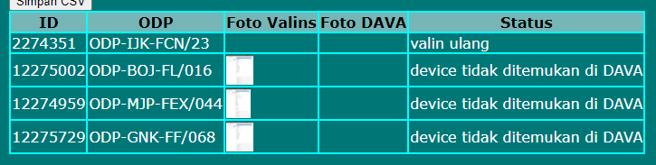
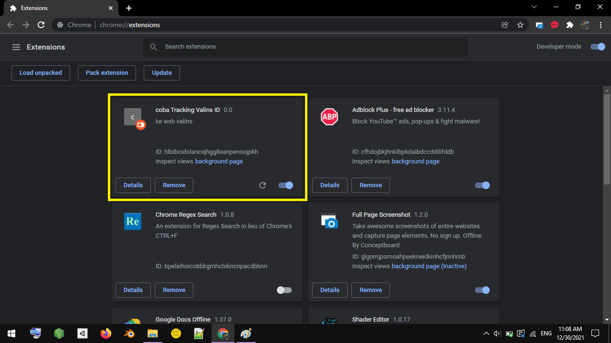

Cara pakai ekstensi Tracking Valins ID v1
Tentang
Extension ini menghimpun informasi dari web valins dan emas.telkom.co.id berupa
- ID Valins
- ODP
- screenshot valins
- screenshot dava
- status
menjadi tabel eviden, berupa file html.

Cara pasang
- Buka Google Chrome
-
Buka ekstensi di pojok kanan atas

- Klik manage extensions
-
Load unpacked

-
Pilih folder Tracking valins id

Ekstensi "coba Tracking valins id" sudah muncul

Cara pakai
-
Buka halaman Tracking Valins ID

-
Masukkan ID ke textarea
-
Tekan tombol "Start Track"
Laman web akan submit ID valins satu per satu secara otomatis
Tunggu hingga textarea menjadi kosong
-
Buka atau reload laman DAVA (https://emas.telkom.co.id/DAVA/dataValidation/validOrderCapture/servicePoint)
Laman web langsung mencari device secara otomatis
Tunggu hingga status "belum cek dava" tidak ditemukan di dalam tabel
-
Klik Download